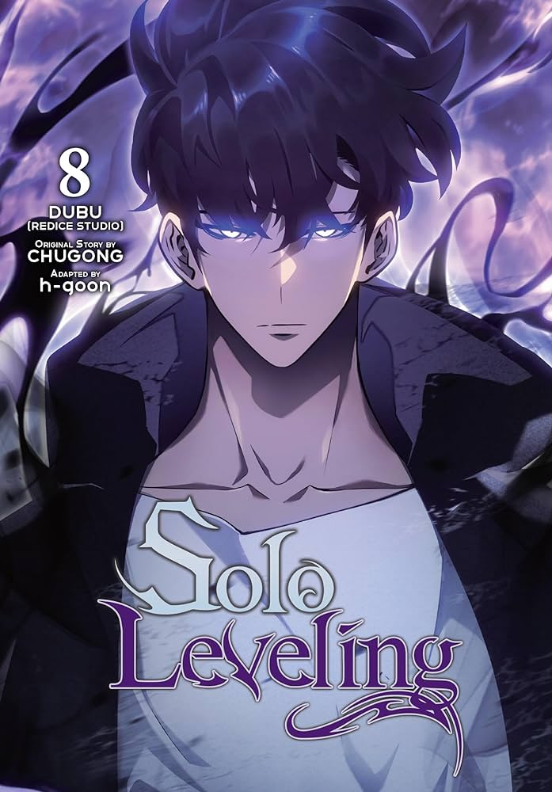
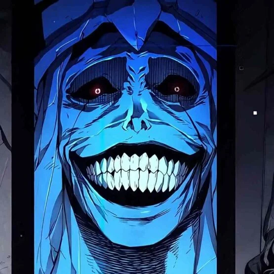

Em Solo Leveling, o grande protagonista é, portanto, Sung Jin-woo
, um jovem que precisa mostrar seu valor em mundo no qual ele é, com frequência, desmerecido. Nesse sentido, o anime
se destaca ao trazer um herói que precisa dar a volta por cima e que se arrisca cada vez mais para
A qualidade técnica geral de Solo Leveling é inquestionável. Digo isso pois sua direção de arte, fotografia, design, traços, entre outras características são tão incríveis que saltam aos olhos. Parecem ter vida à medida que você passa pelas páginas!

Sung